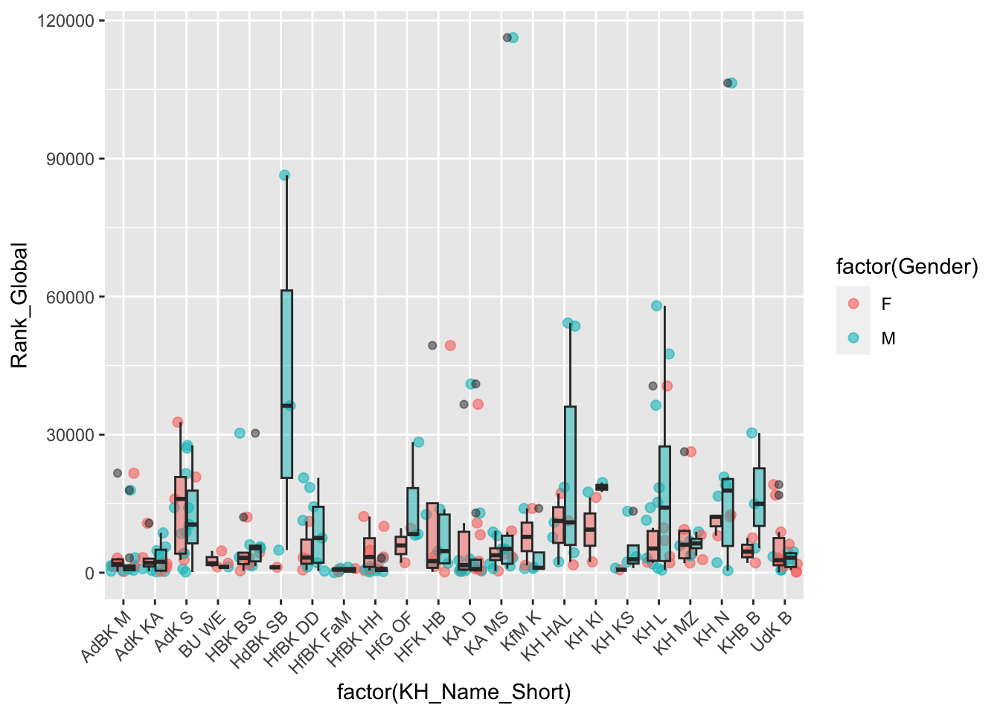
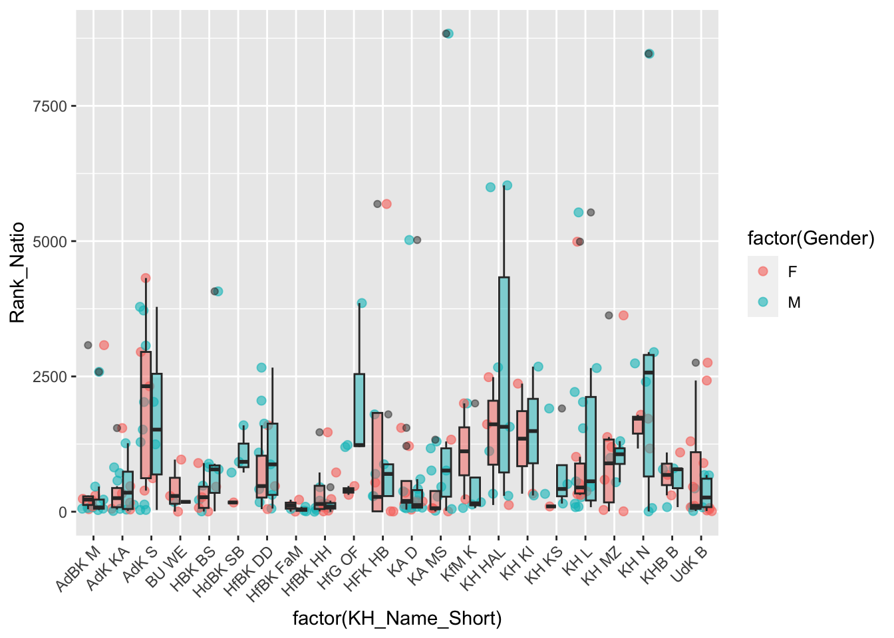

# Load data set
library(readxl)
df <- read_excel("./Fine_Artfacts_Kunsthochschulen.xlsx")Introduction
The Chernoff-Faces (Chernoff 1973) developed by Herman Chernoff (* 1 July 1923) are a method of multivariate data visualisation. Within the framework of data visualisation using Chernoff Faces, the physiognomy of a cartoon-like simplified human face (e.g. size of the ears, shape of the mouth, inclination of the eyebrows, size of the nose, etc.) is shaped according to the characteristic values of a object. As a result, each row vector of a data set receives a Chernoff face structured according to its combination of column vector values. By means of the Chernoff faces, which may vary depending on the values on the column vectors, the feature profiles of the row vectors can now be compared with each other. A distinctive strength of the Chernoff Faces visualisation method is that it uses the human ability to register even small divergences or convergences in the physiognomy of human (or human-like) faces. Since the physiognomy of the Chernoff Faces is in a sense short-circuited with the feature expressions of the respective feature carriers, the method of the Chernoff Faces allows similarity or dissimilarity structures of different feature profiles of line vectors to be explored easily and intuitively.
The application of Chernoff Faces becomes problematic with data sets (cf. Livingstone 2009) with a very large number of row vectors: Of course, twenty faces are easier to distinguish than two hundred.
Data
The data set used for illustration purposes in the following shows the following variables for all professors at German public art colleges in the field of fine arts (and related subjects):
- national and international ranking position of the artist rankings (Artfacts)
- age
- gender
Statistical profiles can now be generated in these aforementioned dimensions for German, all public art colleges, which in turn can be visualised and explored using the Chernoff Faces. For this purpose, the following simple key figures are to be calculated for each art academy:
- mean value of the global ranking of all professors of an art academy
- mean value of the national ranking of all professors of an art academy
- number of professors per art academy in total
- number of female professors per art academy
- number of male professors per art academy
- average age of all professors per art academy
Data processing
In a first step, the data set described above is loaded into the working environment for data preparation using the tidyverse packages (Wickham 2017). This is done here using the read_excel() function of the readxl package (Wickham and Bryan 2019).
Within the framework of the data collection of the ranking positions, it was easy to determine a global ranking position for almost all professors. The collection of the national ranking position, which at the beginning of 2019 was still based on the birthplace of the respective artist, is more complicated. In order not to reduce the information content of the data during the survey, a new column vector was created for each nationality, which contains the respective national ranking position:
head(df[,14:36])# A tibble: 6 × 23
Rank_Germany Rank_USA Rank_France Rank_Netherlands Rank_Austria Rank_Turkey
<dbl> <dbl> <dbl> <dbl> <dbl> <dbl>
1 7 NA NA NA NA NA
2 24 NA NA NA NA NA
3 33 NA NA NA NA NA
4 34 NA NA NA NA NA
5 40 NA NA NA NA NA
6 NA NA NA NA NA NA
# ℹ 17 more variables: `Rank_United Kingdom` <dbl>, Rank_Italy <dbl>,
# Rank_Romania <dbl>, Rank_Sweden <dbl>, `Rank_South Africa` <dbl>,
# Rank_Norway <dbl>, Rank_Finland <dbl>, Rank_Switzerland <dbl>,
# `Rank_New Zealand` <dbl>, Rank_Mexico <dbl>, Rank_Japan <dbl>,
# Rank_Australia <dbl>, Rank_Israel <dbl>, Rank_Poland <dbl>,
# Rank_Canada <dbl>, `Rank_Korea (Republic of)` <dbl>, Rank_Iran <dbl>For the following analyses, these column vectors must be combined into a single vector, which should be named Rank_Natio:
#Set NA to "" and join columns together
library(tidyverse)
colnames(df) [1] "Name" "Media"
[3] "Gender" "Nationalitaet"
[5] "Alter" "Lives_Works"
[7] "Most_Exibit_in_1" "Most_Exibit_in_2"
[9] "Most_Exibit_in_3" "Kunsthochschule"
[11] "Fachbereich" "Death"
[13] "Rank_Global" "Rank_Germany"
[15] "Rank_USA" "Rank_France"
[17] "Rank_Netherlands" "Rank_Austria"
[19] "Rank_Turkey" "Rank_United Kingdom"
[21] "Rank_Italy" "Rank_Romania"
[23] "Rank_Sweden" "Rank_South Africa"
[25] "Rank_Norway" "Rank_Finland"
[27] "Rank_Switzerland" "Rank_New Zealand"
[29] "Rank_Mexico" "Rank_Japan"
[31] "Rank_Australia" "Rank_Israel"
[33] "Rank_Poland" "Rank_Canada"
[35] "Rank_Korea (Republic of)" "Rank_Iran"
[37] "Studienfach" "Studienort"
[39] "Studium_bei" df <- df %>% mutate_if(is.numeric,as.character) %>% replace(., is.na(.), "") %>% unite("Rank_Natio", c(14:36))
# Remove underscore caused by the unite_function.
df$Rank_Natio <- str_replace_all(df$Rank_Natio, "(_+)", "") #Convert "_" (or more) into ""
#replace empty string cells with NA data frame-wide
df <- mutate_all(df, funs(na_if(.,"")))Furthermore, the ranking variables were loaded into the working environment as string variables; for the sake of simplicity, these are converted individually into numeric variables:
#colnames(df)
df$Rank_Global <- as.numeric(df$Rank_Global)
df$Rank_Natio <- as.numeric(df$Rank_Natio)
df$Kunsthochschule <- as.factor(df$Kunsthochschule)In the following, aggregated variables are created at the art college level. These are, as already described above:
- mean value of the global ranking of all professors of an art academy
- mean value of the national ranking of all professors of an art academy
- number of professors per art academy in total
- number of female professors per art academy
- number of male professors per art academy
- average age of all professors per art academy
# Create aggregated variables at college level
# Ranking average values per art college
Rank <- df %>% group_by(Kunsthochschule) %>% mutate(Mean_Nat_Rank= mean(Rank_Natio,na.rm = T)) %>% mutate(Mean_Global_Rank = mean(Rank_Global, na.rm = T)) %>%
summarize(Sum_Nat = round(mean(Mean_Nat_Rank),2), Sum_Glob = round(mean(Mean_Global_Rank),2))
# Number of professors per art college
Profs <- df %>% group_by(Kunsthochschule) %>% summarise (n_Profs = n())
# Number of men/women per art college
Gender <- df %>% group_by(Kunsthochschule) %>%
summarise(n_Frau = sum(Gender == "F"), n_Mann = sum(Gender == "M"))
# Mean_age per art college
df$Alter <- as.numeric(df$Alter)
df$Alter <- 2019-df$Alter
Alter <- df %>% group_by(Kunsthochschule) %>% mutate(Mean_Alter= mean(Alter,na.rm = T)) %>%
summarize(Mean_Alter_Sum = round(mean(Mean_Alter),2))
# Data merging:
df1 <- merge(Rank,Profs, by="Kunsthochschule")
df2 <- merge(df1,Gender, by="Kunsthochschule")
ArtFac <- merge(df2,Alter, by="Kunsthochschule")
# Remove all data frames except ArtFac + df
rm(list=setdiff(ls(), c("ArtFac", "df")))Finally, all rows with one or more missings on the column vectors are filtered out of the data frame. In addition, in order to make the Chernoff-Faces plot to be generated clearer, the names of the art colleges are replaced by acronyms and specified as rownames.
# colnames(ArtFac)
# filter out NA row
ArtFac <- ArtFac %>% filter(!is.na(Sum_Nat))
# Columns in rownames
ArtFac <- ArtFac %>% remove_rownames %>% column_to_rownames(var="Kunsthochschule")
#rownames(ArtFac)
# Change the names of the KHs to make the Faces plot clearer.
rownames(ArtFac)[1]<-"AdBK M"
rownames(ArtFac)[2]<-"BU WE"
rownames(ArtFac)[3]<-"KH HAL"
rownames(ArtFac)[4]<-"HBK BS"
rownames(ArtFac)[5]<-"HfBK DD"
rownames(ArtFac)[6]<-"HfBK HH"
rownames(ArtFac)[7]<-"HFK HB"
rownames(ArtFac)[8]<-"HdBK SB"
rownames(ArtFac)[9]<-"HfG OF"
rownames(ArtFac)[10]<-"KA D"
rownames(ArtFac)[11]<-"KA MS"
rownames(ArtFac)[12]<-"KHB B"
rownames(ArtFac)[13]<-"KfM K"
rownames(ArtFac)[14]<-"KH KS"
rownames(ArtFac)[15]<-"KH KI"
rownames(ArtFac)[16]<-"KH L"
rownames(ArtFac)[17]<-"KH MZ"
rownames(ArtFac)[18]<-"KH N"
rownames(ArtFac)[19]<-"AdK KA"
rownames(ArtFac)[20]<-"AdK S"
rownames(ArtFac)[21]<-"HfBK FaM"
rownames(ArtFac)[22]<-"UdK Berlin"The finished dataframe finally takes the following form:
library(knitr)
ArtFac %>%
kable(format = 'markdown')| Sum_Nat | Sum_Glob | n_Profs | n_Frau | n_Mann | Mean_Alter_Sum | |
|---|---|---|---|---|---|---|
| AdBK M | 509.13 | 3845.47 | 17 | 6 | 11 | 58.76 |
| BU WE | 359.50 | 2327.00 | 4 | 3 | 1 | 49.50 |
| KH HAL | 2223.50 | 18192.20 | 14 | 6 | 8 | 54.36 |
| HBK BS | 747.67 | 8430.00 | 13 | 5 | 8 | 58.92 |
| HfBK DD | 949.25 | 7841.25 | 12 | 3 | 9 | 59.25 |
| HfBK HH | 251.27 | 3525.25 | 16 | 8 | 8 | 51.94 |
| HFK HB | 1132.11 | 9973.33 | 9 | 4 | 5 | 54.89 |
| HdBK SB | 853.25 | 32832.40 | 5 | 2 | 3 | 56.80 |
| HfG OF | 1413.80 | 11350.00 | 5 | 2 | 3 | 53.20 |
| KA D | 584.21 | 6600.47 | 19 | 8 | 11 | 54.32 |
| KA MS | 1161.23 | 12924.08 | 13 | 4 | 9 | 55.08 |
| KHB B | 624.50 | 10828.83 | 6 | 3 | 3 | 56.50 |
| KfM K | 768.67 | 17749.57 | 8 | 2 | 5 | 58.14 |
| KH KS | 599.60 | 4157.80 | 6 | 1 | 5 | 51.00 |
| KH KI | 1420.25 | 36768.60 | 6 | 3 | 3 | 62.00 |
| KH L | 1359.82 | 16067.94 | 18 | 6 | 12 | 54.29 |
| KH MZ | 1080.70 | 7809.40 | 11 | 6 | 5 | 55.55 |
| KH N | 2367.22 | 27328.20 | 10 | 4 | 6 | 52.10 |
| AdK KA | 444.64 | 3176.14 | 14 | 6 | 8 | 55.86 |
| AdK S | 1842.19 | 13372.31 | 16 | 5 | 11 | 58.25 |
| HfBK FaM | 72.00 | 604.57 | 8 | 3 | 5 | 49.50 |
| UdK Berlin | 596.65 | 14717.55 | 22 | 12 | 10 | 54.70 |
The lower the value of a ranking profile, the better the professors of the respective art academy are ranked on average.
Chernoff faces
The faces() function of the package aplpack (Wolf 2019) automatically generates an overview of which variables were assigned to which facial regions of the Chernoff Faces. It becomes clear that because only six variables were specified, the same variables were used for the remaining facial features to be modelled. The colouring of the faces is done as follows: “For painting elements of a face the colors of are found by averaging of sets of variables: (7,8)- eyes:iris, (1,2,3)-lips, (14,15)-ears, (12,13)-nose, (9,10,11)-hair, (1,2)-face (Wolf 2019, 9).”
Looking at the profiles of the rankings of German art college professors, it becomes clear that the reputation poles of the art colleges are characterised by two extremes: The plus pole of reputation is formed by the professors of the HfBK Frankfurt am Main (HfBK FaM), the minus pole by the KH Halle (KH HAL). The smaller a Chernoff Face, the closer the profile of the respective art academy approaches the positive pole of reputation, and, vice versa, the larger a Chernoff Face, the closer the profile of the respective art academy approaches the negative pole of reputation. Similarly intuitively, the other four variables can now be compared simultaneously across the different profiles of the art colleges.
library(aplpack)
faces(ArtFac[1:22,],face.type=1)effect of variables:
modified item Var
"height of face " "Sum_Nat"
"width of face " "Sum_Glob"
"structure of face" "n_Profs"
"height of mouth " "n_Frau"
"width of mouth " "n_Mann"
"smiling " "Mean_Alter_Sum"
"height of eyes " "Sum_Nat"
"width of eyes " "Sum_Glob"
"height of hair " "n_Profs"
"width of hair " "n_Frau"
"style of hair " "n_Mann"
"height of nose " "Mean_Alter_Sum"
"width of nose " "Sum_Nat"
"width of ear " "Sum_Glob"
"height of ear " "n_Profs" Further analysis
In order to get a more detailed look at the reputation structure of the profiles of the art academies, boxplots are generated using the package ggplot2 (Wickham 2016) to differentiate the national and international ranking profile of the art academies according to gender.
library(stringr)
colnames(df) [1] "Name" "Media" "Gender" "Nationalitaet"
[5] "Alter" "Lives_Works" "Most_Exibit_in_1" "Most_Exibit_in_2"
[9] "Most_Exibit_in_3" "Kunsthochschule" "Fachbereich" "Death"
[13] "Rank_Global" "Rank_Natio" "Studienfach" "Studienort"
[17] "Studium_bei" df$KH_Name_Short <- df$Kunsthochschule
df$KH_Name_Short <- df$KH_Name_Short %>%
str_replace("Akademie der Bildenden Künste München","AdBK M") %>%
str_replace("Bauhaus-Universität Weimar","BU WE") %>%
str_replace("Burg Giebichenstein Kunsthochschule Halle","KH HAL") %>%
str_replace("HBK Braunschweig","HBK BS") %>%
str_replace("HfBK Dresden","HfBK DD") %>%
str_replace("HfbK Hamburg","HfBK HH") %>%
str_replace("HFK Bremen","HFK HB") %>%
str_replace("Hochschule der Bildenden Künste Saar", "HdBK SB") %>%
str_replace("Hochschule für Gestaltung Offenbach", "HfG OF") %>%
str_replace("Kunstakademie Düsseldorf","KA D") %>%
str_replace("Kunstakademie Münster","KA MS") %>%
str_replace("Kunsthochschule Berlin Weißensee","KHB B") %>%
str_replace("Kunsthochschule für Medien Köln","KfM K") %>%
str_replace("Kunsthochschule Kassel","KH KS") %>%
str_replace("Kunsthochschule Kiel","KH KI") %>%
str_replace(" \\(.*\\)", "") %>% # einzelnd Klammern entfernen, sonst funktioniert str_replace bei HfBK FaM nicht
str_replace("Kunsthochschule Leipzig","KH L") %>%
str_replace("Kunsthochschule Mainz","KH MZ") %>%
str_replace("Kunsthochschule Nürnberg","KH N") %>%
str_replace("Staatliche Akademie der Bildenden Künste Karlsruhe","AdK KA") %>%
str_replace("Staatliche Akademie der Bildenden Künste Stuttgart","AdK S") %>%
str_replace("Staatliche Hochschule für Bildende Künste Frankfurt am Main","HfBK FaM") %>%
str_replace("UdK Berlin","UdK B")
#Gender dichothomisieren:
df$Gender <- df$Gender %>%
str_replace("M, F","F")
df_gg <- df %>% select(Gender,KH_Name_Short,Rank_Global,Rank_Natio) %>% na.omit()
#Rank Global über Khs und Geschlecht
ggplot(df_gg, aes(x=factor(KH_Name_Short), y=Rank_Global, fill=factor(Gender)) ) +
#geom_point(size=2, alpha=.6,aes(colour=factor(Gender)))+
geom_jitter(size=2, alpha=.6,aes(colour=factor(Gender))) +
geom_boxplot(alpha = 0.5, show.legend = FALSE)+
theme(axis.text.x = element_text(angle=45, hjust=1))
#Rank National über Khs und Geschlecht
ggplot(df_gg, aes(x=factor(KH_Name_Short), y=Rank_Natio, fill=factor(Gender)) ) +
#geom_point(size=2, alpha=.6,aes(colour=factor(Gender)))+
geom_jitter(size=2, alpha=.6,aes(colour=factor(Gender))) +
geom_boxplot(alpha = 0.5, show.legend = FALSE)+
theme(axis.text.x = element_text(angle=45, hjust=1))
The national and international ranking profiles of the art academies do not show any clear gender differences.
References
Chernoff, Herman. 1973. “The Use of Faces to Represent Points in k-Dimensional Space Graphically.” Journal of the American Statistical Association 68 (342): 361–68.
Livingstone, David. 2009. A Practical Guide to Scientific Data Analysis. Vol. 341. Wiley Online Library.
Wickham, Hadley. 2016. Ggplot2: Elegant Graphics for Data Analysis. Springer-Verlag New York. https://ggplot2.tidyverse.org.
———. 2017. Tidyverse: Easily Install and Load the ’Tidyverse’. https://CRAN.R-project.org/package=tidyverse.
Wickham, Hadley, and Jennifer Bryan. 2019. Readxl: Read Excel Files. https://CRAN.R-project.org/package=readxl.
Wolf, Hans Peter. 2019. Aplpack: Another Plot Package: ’Bagplots’, ’Iconplots’, ’Summaryplots’, Slider Functions and Others. https://cran.r-project.org/web/packages/aplpack/index.html.